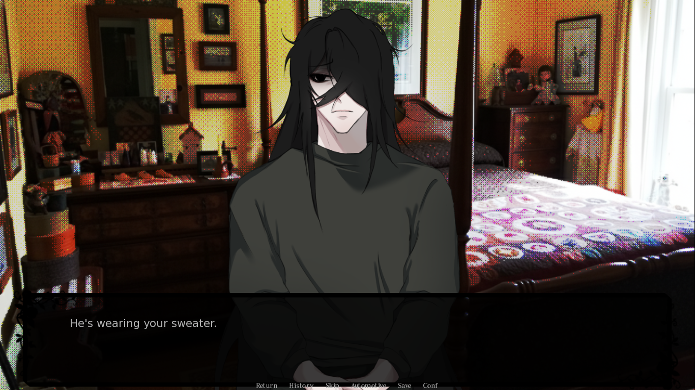

Play online free — psychological horror visual novel from itch.io. No download required.

Home Is Where He Is is a psychological horror visual novel originally released on itch.io. You inherit an isolated house after your grandfather’s death — but something inside is watching you.
The game features a disturbing yandere character named Mould, dynamic choices, and a tense narrative driven by observation and control.
Can I play Home Is Where He Is online?
Yes, you can play it directly in your browser without downloading.
Is Home Is Where He Is on itch.io?
Yes, the original version was released on itch.io by the creator.
Is the game complete?
Currently, only a demo (prologue + Day 1) is available.